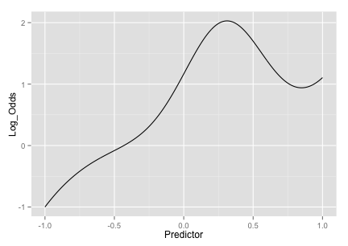
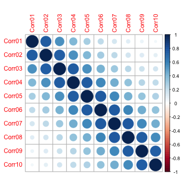

Benchmarking Machine Learning Models Using Simulation
What is the objective of most data analysis? One way I think about it is that we are trying to discover or approximate what is really going on in our data (and in general, nature). However, I occasionally run into people think that if one model fulfills our expectations (e.g. higher number of significant p-values or accuracy) than it must be better than any other model that does not. For most data sets, we don’t know what the truth is, so this is a problem.
Computational biology/bioinformatics are particularly bad in this way. In many cases, the cost, time and complexity of high dimensional biology experiments prevents a solid, methodical validation of analysis of the initial data set. This is has be verified by a number of different publications.
I was talking to someone recently who was describing their research with ~150 samples and ~50,000 predictors. They used the same sample set to do feature selection and then build predictive models. The results was a random forest model based on about 150 predictors. The validation was based on running some of the same samples using a different technology. When I asked if there there would be any external validation, their response was “we’re never going to get a 5,000 sample clinical trial to check the results.” While true (and a bit dramatic), it is not an excuse to throw out good methodology. In fact, you would think that a lack of a clear path to validation would make people be more dogmatic about methodology…
When I’m trying to evaluate any sort of statistic method, I try to use a good simulation system so that I can produce results where I know the truth. Examples are the “Friedman” simulations systems for regression modeling, such as the ‘Friedman 3’ model. This is a non-linear regression function of four real predictors:
y = atan ((x2 x3 - (1/(x2 x4)))/x1) + errorThe the mlbench package has this in R code as well as other simulation systems.
I’ve been looking for a system that can be used to test a few different aspects of classification models:
- class imbalances
- non-informative predictors
- correlation amoung the predictors
- linear and nonlinear signals
I spent a few hours developing one. It models the log-odds of a binary event as a function of true signals using several additive “sets” of a few different types. First, there are two main effects and an interaction:
intercept - 4A + 4B + 2AB (A and B are the predictors) The intercept is a parameter for the simulation and can be used to control the amount of class imbalance.
The second set of effects are linear with coefficients that alternate signs and have values between 2.5 and 0.025. For example, if there were six predictors in this set, their contribution to the log-odds would be
-2.50C + 2.05D -1.60E + 1.15F -0.70G + 0.25HThe third set is a nonlinear function of a single predictor ranging between [0, 1] called J here:
(J^3) + 2exp(-6(J-0.3)^2) I saw this in one of Radford Neal’s presentations but I couldn’t find an exact reference for it. The equation produces an interesting trend:

The fourth set of informative predictors are copied from one of Friedman’s systems and use two more predictors (K and L):
2sin(KL)All of these effects are added up to model the log-odds. This is used to calculate the probability of a sample being in the first class and a random uniform number is used to actually make the assignment of the actual class.
We can also add non-informative predictors to the data. These are random standard normal predictors and can be optionally added to the data in two ways: a specified number of independent predictors or a set number of predictors that follow a particular correlation structure. The only two correlation structure that I’ve implemented are
compound-symmetry (aka exchangeable) where there is a constant correlation between all the predictors
auto-regressive 1 [AR(1)]. While there is no time component to these data, we can use this structure to add predictors of varying levels of correlation. For example, if there were 4 predictors and
r(for rho) was the correlation parameter, the between predictor correlaiton matrix would be
| 1 sym |
| r 1 |
| r^2 r 1 |
| r^3 r^2 r 1 |
| r^4 r^3 r^2 r 1 |For AR(1), correlations decrease as the predictors are “father away” from each other (in order). Simulating ten predictors (named Corr01 - Corr10) with a correlation parameter of 0.75 yields the following between-predictor correlation structure:

To demonstrate, let’s take a set of data and see how a support vector machine performs:
set.seed(468)
training <- twoClassSim( 300, noiseVars = 100,
corrVar = 100, corrValue = 0.75)
testing <- twoClassSim( 300, noiseVars = 100,
corrVar = 100, corrValue = 0.75)
large <- twoClassSim(10000, noiseVars = 100,
corrVar = 100, corrValue = 0.75)The default for the number of informative linear predictors is 10 and the default intercept of -5 makes the class frequencies fairly balanced:
table(large$Class)/nrow(large)
##
## Class1 Class2
## 0.5457 0.4543We’ll use the train function to tune and train the model:
library(caret)
ctrl <- trainControl(method = "repeatedcv",
repeats = 3, classProbs = TRUE,
summaryFunction = twoClassSummary)
set.seed(1254)
fullModel <- train(Class ~ ., data = training,
method = "svmRadial",
preProc = c("center", "scale"),
tuneLength = 8,
metric = "ROC",
trControl = ctrl)
fullModel
## 300 samples
## 215 predictors
## 2 classes: 'Class1', 'Class2'
##
## Pre-processing: centered, scaled
## Resampling: Cross-Validation (10 fold, repeated 3 times)
##
## Summary of sample sizes: 270, 270, 270, 270, 270, 270, ...
##
## Resampling results across tuning parameters:
##
## C ROC Sens Spec ROC SD Sens SD Spec SD
## 0.25 0.636 1 0 0.0915 0 0
## 0.5 0.635 1 0.00238 0.0918 0 0.013
## 1 0.644 0.719 0.438 0.0929 0.0981 0.134
## 2 0.68 0.671 0.574 0.0863 0.0898 0.118
## 4 0.69 0.673 0.579 0.0904 0.0967 0.11
## 8 0.69 0.673 0.579 0.0904 0.0967 0.11
## 16 0.69 0.673 0.579 0.0904 0.0967 0.11
## 32 0.69 0.673 0.579 0.0904 0.0967 0.11
##
## Tuning parameter 'sigma' was held constant at a value of 0.00353
## ROC was used to select the optimal model using the largest value.
## The final values used for the model were C = 4 and sigma = 0.00353.Cross-validation estimates the best area under the ROC curve to be 0.69. Is this an accurate estimate? The test set has:
fullTest <- roc(testing$Class,
predict(fullModel, testing, type = "prob")[,1],
levels = rev(levels(testing$Class)))
fullTest
##
## Call:
## roc.default(response = testing$Class, predictor = predict(fullModel, testing, type = "prob")[, 1], levels = rev(levels(testing$Class)))
##
## Data: predict(fullModel, testing, type = "prob")[, 1] in 140 controls (testing$Class Class2) < 160 cases (testing$Class Class1).
## Area under the curve: 0.78For this small test set, the estimate is 0.09 larger than the resampled version. How do both of these compare to our approximation of the truth?
fullLarge <- roc(large$Class,
predict(fullModel, large, type = "prob")[, 1],
levels = rev(levels(testing$Class)))
fullLarge
##
## Call:
## roc.default(response = large$Class, predictor = predict(fullModel, large, type = "prob")[, 1], levels = rev(levels(testing$Class)))
##
## Data: predict(fullModel, large, type = "prob")[, 1] in 4543 controls (large$Class Class2) < 5457 cases (large$Class Class1).
## Area under the curve: 0.733How much did the presence of the non-informative predictors affect this model? We know the true model, so we can fit that and evaluate it in the same way:
realVars <- names(training)
realVars <- realVars[!grepl("(Corr)|(Noise)", realVars)]
set.seed(1254)
trueModel <- train(Class ~ .,
data = training[, realVars],
method = "svmRadial",
preProc = c("center", "scale"),
tuneLength = 8,
metric = "ROC",
trControl = ctrl)
trueModel
## 300 samples
## 15 predictors
## 2 classes: 'Class1', 'Class2'
##
## Pre-processing: centered, scaled
## Resampling: Cross-Validation (10 fold, repeated 3 times)
##
## Summary of sample sizes: 270, 270, 270, 270, 270, 270, ...
##
## Resampling results across tuning parameters:
##
## C ROC Sens Spec ROC SD Sens SD Spec SD
## 0.25 0.901 0.873 0.733 0.0468 0.0876 0.136
## 0.5 0.925 0.873 0.8 0.0391 0.0891 0.11
## 1 0.936 0.871 0.826 0.0354 0.105 0.104
## 2 0.94 0.881 0.852 0.0356 0.0976 0.0918
## 4 0.936 0.875 0.857 0.0379 0.0985 0.0796
## 8 0.927 0.835 0.852 0.0371 0.0978 0.0858
## 16 0.917 0.821 0.843 0.0387 0.11 0.0847
## 32 0.915 0.821 0.843 0.0389 0.11 0.0888
##
## Tuning parameter 'sigma' was held constant at a value of 0.0573
## ROC was used to select the optimal model using the largest value.
## The final values used for the model were C = 2 and sigma = 0.0573.Much higher! Is this verified by the other estimates?
trueTest <- roc(testing$Class,
predict(trueModel, testing, type = "prob")[, 1],
levels = rev(levels(testing$Class)))
trueTest
##
## Call:
## roc.default(response = testing$Class, predictor = predict(trueModel, testing, type = "prob")[, 1], levels = rev(levels(testing$Class)))
##
## Data: predict(trueModel, testing, type = "prob")[, 1] in 140 controls (testing$Class Class2) < 160 cases (testing$Class Class1).
## Area under the curve: 0.923
trueLarge <- roc(large$Class,
predict(trueModel, large, type = "prob")[, 1],
levels = rev(levels(testing$Class)))
trueLarge
##
## Call:
## roc.default(response = large$Class, predictor = predict(trueModel, large, type = "prob")[, 1], levels = rev(levels(testing$Class)))
##
## Data: predict(trueModel, large, type = "prob")[, 1] in 4543 controls (large$Class Class2) < 5457 cases (large$Class Class1).
## Area under the curve: 0.926At this point, we might want to look and see what would happen if all 200 non-informative predictors were uncorrelated etc. At least we have a testing tool to make objective statements.
Code to create this can be found here and will end up making its way into the caret package.
Any suggestions for simulation systems?
(This article was originally posted at http://appliedpredictivemodeling.com)